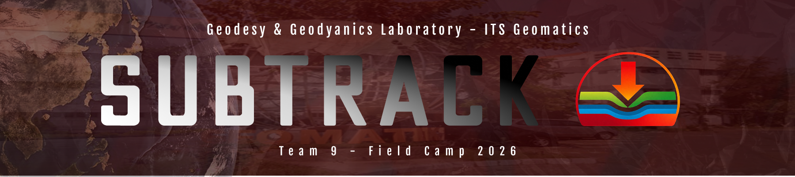

Visualisasi ini menampilkan hasil analisis deformasi permukaan tanah menggunakan metode InSAR berbasis data Sentinel-1. Data ini digunakan untuk mengidentifikasi pola penurunan tanah (land subsidence) serta mendukung analisis risiko banjir di kawasan pesisir.
Metode pengukuran deformasi permukaan berbasis radar satelit.
Data SAR resolusi tinggi untuk monitoring perubahan permukaan.
Displacement (mm/tahun) & time-series deformasi.
Mendukung mitigasi banjir & perencanaan infrastruktur.